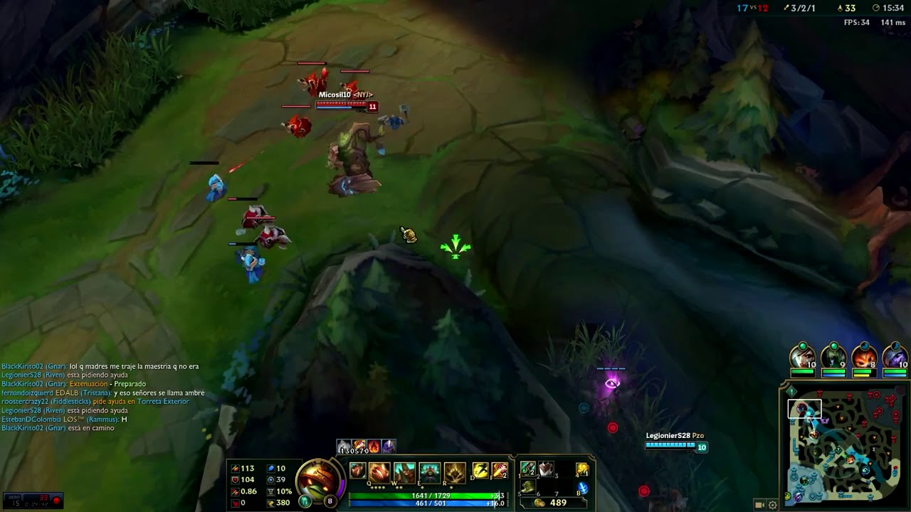

Gra normalna to najczęstszy tryb gry PvP, który nie wpływa na PL. Nagradza graczy XP i PZ IP icon.png w większej ilości jak gry niestandardowe i razem przeciw SI. Przywoływacz może używać wszelkich dostępnych bohaterów, umiejętności bohaterów, specjalizacji i stron na runy podobnie jak w innych trybach gry. Normalne gry można grać samemu lub wraz z zespołem 1-4 osób. Losowanie sojuszników i przeciwników odbywa się w zależności od ukrytego MMR. Normalna gra trwa zazwyczaj od 20 min. do 60 min. i nie może być zatrzymana, więc upewnij się, że masz wystarczająco czasu, aby ją zakończyć.

Każdy gracz wybiera bohatera, którym będzie grać. To po prostu oznacza, że zespół nie może zobaczyć wybieranych bohaterów wrogiej drużyny do momentu rozpoczęcia ładowania gry. Jedna drużyna może posiadać każdego bohatera, więc bohater wybrany przez sojusznika jest dla nas zablokowany.
Tryb Draftu rożni się od wyboru w ciemno w następujący sposób. Ten tryb gry został stworzony jako alternatywę do konkurencji, w którym gracze są wzbierani na poziomie ELO.
Faza blokowania: Na początku kapitanowie drużyn mają możliwość zablokowania łącznie 6 bohaterów. Podczas tej fazy zespoły mogą zobaczyć wszystkich dostępnych bohaterów przeciwnika.
Faza wybierania bohatera: Podczas tej fazy drużyna, która blokowała jako pierwsza otrzymuję pierwszy wybór. Po pierwszym wyborze zespoły na przemian wybierają po dwóch bohaterów, aż dojdą do końca. Nie można wybrać bohatera, który został wcześniej wybrany.
Faza wymiany: Po wybraniu wszystkich bohaterów drużyny mogą wymienić się bohaterami w obrębie zespołu. Członkowie zespołu muszą podsiadać obydwu bohaterów, aby dokonać wymiany. Możliwa jest kilkukrotna wymiana pomiędzy członkami zespołu. Dlatego wymiany są często realizowane w celi zajęcia bohaterów, w celu zablokowania go dla przeciwnej drużyny.
Kreator Drużyn różni się od wyboru w ciemno tym, że każdy gracz wybiera pozycje, role i bohatera i po wejściu do kolejki jest przyznawany do reszty drużyny. Pod koniec 2015 roku, tryb został zastąpiony przez nową dynamiczną kolejkę wyboru.